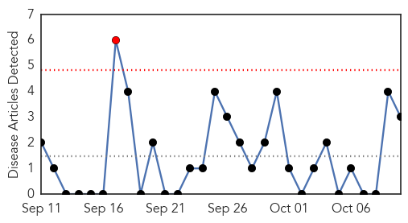
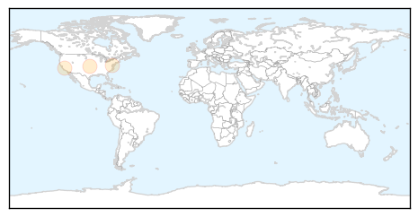
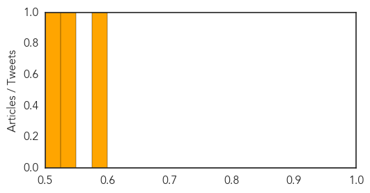
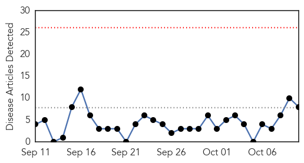
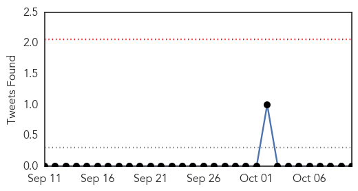
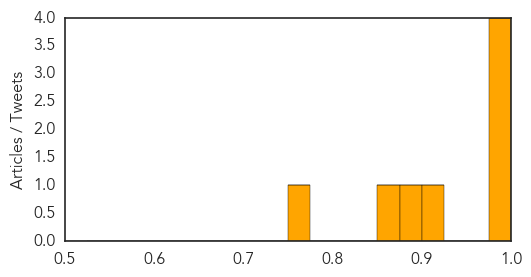

Hepatitis
30-Day Web Trend
1 alerts, 0 warnings

30-Day Twitter Trend
0 alerts, 0 warnings

Article Locations
Article Confidences
Top Articles:
Top Tweets:
-
No tweets found for Oct 10, 2014
Cholera
30-Day Web Trend
0 alerts, 0 warnings

30-Day Twitter Trend
0 alerts, 0 warnings

Article Locations

Article Confidences
Top Articles:
- 0.998
- To stop cholera in Haiti, vaccinate some—not all
- 0.998
- Haiti Cholera Response September 2014 - Haiti
- 0.977
- In Washington, UN, World Bank chiefs rally support 'to build a healthy Haiti'
- 0.976
- In Washington, UN, World Bank chiefs rally support 'to build a healthy Haiti'
- 0.902
- World Bank pledges $50m for Haiti Water and Sanitation Programme
- 0.887
- World Bank pledges $50m for Haiti Water and Sanitation Programme
- 0.872
- Focus on Ebola should not compromise efforts against other diseases
- 0.756
- High-Level Donor Conference on Cholera in Haiti Fails to Secure Much Needed Funding
Top Tweets:
-
No tweets found for Oct 10, 2014